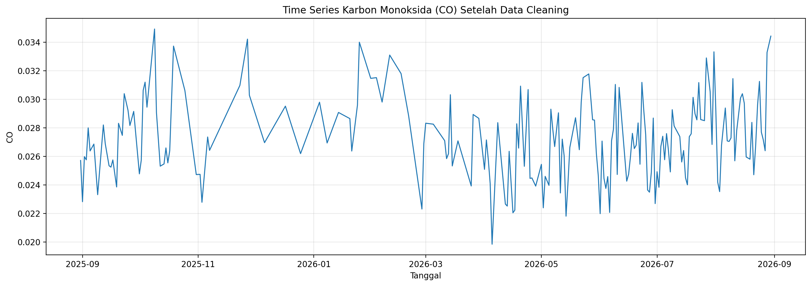
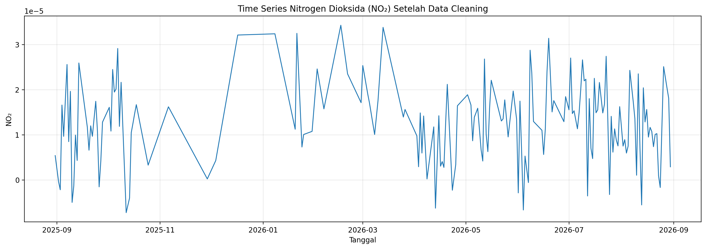
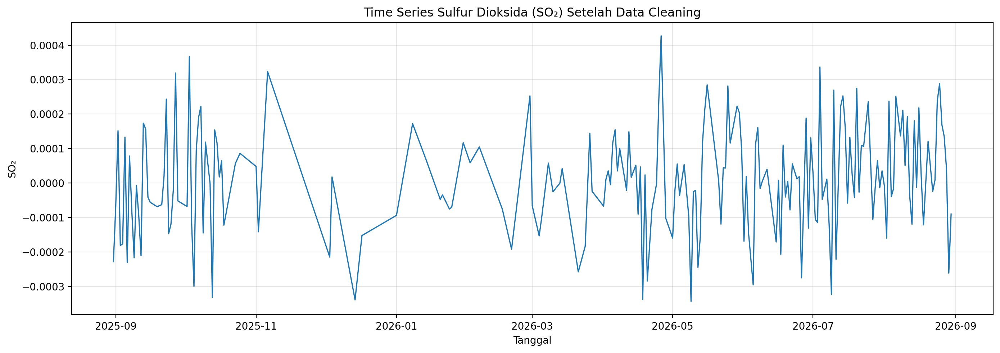

3. Data Preparation#
Tahap Data Preparation dilakukan untuk menyiapkan data mentah CO, NO₂, dan SO₂ agar memiliki format dan kondisi yang sesuai untuk digunakan pada tahap analisis selanjutnya.
Berdasarkan hasil Data Understanding, ketiga dataset memiliki 365 tanggal pengamatan pada periode 31 Agustus 2025 hingga 30 Agustus 2026. Namun, masih ditemukan beberapa kondisi yang perlu ditangani sebelum data dapat digunakan untuk analisis.
Kondisi tersebut meliputi:
kolom
COpada data mentah masih bertipeobject,terdapat nilai
[None]pada data CO,terdapat missing value pada data NO₂,
terdapat missing value pada data SO₂.
Oleh karena itu, tahap Data Preparation berfokus pada penyesuaian format data dan penanganan nilai yang tidak tersedia dengan tetap mempertahankan struktur temporal dari masing-masing dataset.
Proses persiapan dilakukan secara terpisah terhadap data CO, NO₂, dan SO₂ sebelum data digunakan pada tahap analisis time series dan ekstraksi fitur.
3.1. 1. Penyesuaian Format Data#
Sebelum dilakukan penanganan missing value dan outlier, format data diperiksa dan disesuaikan terlebih dahulu. Kolom date pada ketiga dataset diubah menjadi tipe datetime agar dapat digunakan sebagai indeks temporal.
Pada data CO terdapat kondisi khusus karena nilai pada kolom CO masih terbaca sebagai tipe object dengan format seperti [0.0257152002304792] dan [None]. Oleh karena itu, nilai CO perlu dikonversi terlebih dahulu menjadi nilai numerik.
Nilai [None] dikonversi menjadi NaN, sedangkan nilai yang berada di dalam list diambil sebagai nilai numerik.
3.1.1. 1.1 Code Penyesuaian Data CO#
import pandas as pd
import numpy as np
import ast
df_co = pd.read_csv("CO_Kota_Sumenep_raw.csv")
def parse_co(x):
try:
value = ast.literal_eval(x)
if value is None:
return np.nan
return float(value[0])
except:
return np.nan
df_co["date"] = pd.to_datetime(df_co["date"])
df_co["CO"] = df_co["CO"].apply(parse_co)
df_co = df_co.sort_values("date").reset_index(drop=True)
---
## 2. Deteksi Outlier Menggunakan IQR
Selain *missing value*, data juga diperiksa untuk mendeteksi nilai yang berada di luar rentang umum data (*outlier*). Deteksi *outlier* dilakukan menggunakan metode **Interquartile Range (IQR)**.
IQR merupakan selisih antara kuartil ketiga ($Q_3$) dan kuartil pertama ($Q_1$):
$$
IQR = Q_3 - Q_1
$$
Batas bawah dan batas atas ditentukan menggunakan:
$$
\text{Lower Bound} = Q_1 - 1.5 \times IQR
$$
$$
\text{Upper Bound} = Q_3 + 1.5 \times IQR
$$
Nilai polutan yang berada di bawah *lower bound* atau di atas *upper bound* ditandai sebagai *outlier*. Pada proses berikutnya, nilai tersebut diubah menjadi `NaN` agar dapat ditangani bersama *missing value* melalui proses imputasi.
### 2.1 Deteksi Outlier CO
```python
Q1 = df_co["CO"].quantile(0.25)
Q3 = df_co["CO"].quantile(0.75)
IQR = Q3 - Q1
lower_bound = Q1 - 1.5 * IQR
upper_bound = Q3 + 1.5 * IQR
outlier_co = (
(df_co["CO"] < lower_bound) |
(df_co["CO"] > upper_bound)
)
print("Q1 :", Q1)
print("Q3 :", Q3)
print("IQR :", IQR)
print("Lower bound :", lower_bound)
print("Upper bound :", upper_bound)
print("Outlier CO :", outlier_co.sum())
Hasil deteksi menunjukkan terdapat 3 outlier pada data CO.
3.1.2. 2.2 Deteksi Outlier NO₂#
Q1 = df_no2["NO2"].quantile(0.25)
Q3 = df_no2["NO2"].quantile(0.75)
IQR = Q3 - Q1
lower_bound = Q1 - 1.5 * IQR
upper_bound = Q3 + 1.5 * IQR
outlier_no2 = (
(df_no2["NO2"] < lower_bound) |
(df_no2["NO2"] > upper_bound)
)
print("Outlier NO2 :", outlier_no2.sum())
Hasil deteksi menunjukkan terdapat 4 outlier pada data NO₂.
3.1.3. 2.3 Deteksi Outlier SO₂#
Q1 = df_so2["SO2"].quantile(0.25)
Q3 = df_so2["SO2"].quantile(0.75)
IQR = Q3 - Q1
lower_bound = Q1 - 1.5 * IQR
upper_bound = Q3 + 1.5 * IQR
outlier_so2 = (
(df_so2["SO2"] < lower_bound) |
(df_so2["SO2"] > upper_bound)
)
print("Outlier SO2 :", outlier_so2.sum())
Berdasarkan hasil pemeriksaan, jumlah nilai yang perlu ditangani sebelum imputasi menjadi:
Polutan |
Missing Awal |
Outlier IQR |
Total Sebelum Imputasi |
|---|---|---|---|
CO |
167 |
3 |
170 |
NO₂ |
190 |
4 |
194 |
SO₂ |
158 |
8 |
166 |
Nilai outlier tersebut tidak langsung menghapus baris pengamatan. Nilai outlier ditandai sebagai NaN sehingga jumlah observasi tetap 365 baris untuk setiap polutan.
3.2. 3. Penanganan Missing Value dan Outlier#
Setelah outlier teridentifikasi menggunakan metode IQR, nilai outlier ditandai sebagai NaN. Nilai tersebut kemudian ditangani bersama missing value yang sudah terdapat pada data awal.
Karena data merupakan deret waktu harian, proses imputasi dilakukan menggunakan interpolasi berbasis waktu (time interpolation). Metode ini memperkirakan nilai yang hilang berdasarkan nilai sebelum dan sesudahnya dengan mempertimbangkan indeks waktu.
Setelah interpolasi dilakukan, metode ffill() dan bfill() digunakan untuk menangani nilai kosong yang masih mungkin tersisa pada bagian awal atau akhir deret waktu.
Secara umum, proses yang digunakan adalah:
Mengubah nilai outlier menjadi
NaN.Menjadikan kolom
datesebagai indeks.Melakukan interpolasi dengan
method="time".Melakukan forward fill (
ffill()).Melakukan backward fill (
bfill()).Mengembalikan
datemenjadi kolom.
3.2.1. 3.1 Imputasi Data CO#
df_co_clean = df_co.copy()
# Tandai outlier sebagai missing value
df_co_clean.loc[outlier_co, "CO"] = np.nan
print(
"Missing CO sebelum imputasi:",
df_co_clean["CO"].isna().sum()
)
# Jadikan date sebagai index untuk interpolasi berbasis waktu
df_co_clean = df_co_clean.set_index("date")
# Imputasi missing value
df_co_clean["CO"] = (
df_co_clean["CO"]
.interpolate(method="time")
.ffill()
.bfill()
)
# Kembalikan date menjadi kolom
df_co_clean = df_co_clean.reset_index()
print(
"Missing CO setelah imputasi:",
df_co_clean["CO"].isna().sum()
)
Hasil proses menunjukkan bahwa jumlah nilai yang perlu diimputasi pada CO adalah 170 nilai. Setelah interpolasi dan proses pengisian dilakukan, jumlah missing value menjadi 0.
3.2.2. 3.2 Imputasi Data NO₂#
df_no2_clean = df_no2.copy()
# Tandai outlier sebagai NaN
df_no2_clean.loc[outlier_no2, "NO2"] = np.nan
print(
"Missing NO2 sebelum imputasi:",
df_no2_clean["NO2"].isna().sum()
)
# Interpolasi berdasarkan waktu
df_no2_clean = df_no2_clean.set_index("date")
df_no2_clean["NO2"] = (
df_no2_clean["NO2"]
.interpolate(method="time")
.ffill()
.bfill()
)
# Kembalikan date menjadi kolom
df_no2_clean = df_no2_clean.reset_index()
print(
"Missing NO2 setelah imputasi:",
df_no2_clean["NO2"].isna().sum()
)
Pada data NO₂ terdapat 194 nilai yang perlu ditangani setelah missing value awal dan outlier diperhitungkan. Setelah proses imputasi, jumlah missing value menjadi 0.
3.2.3. 3.3 Imputasi Data SO₂#
df_so2_clean = df_so2.copy()
# Tandai outlier sebagai NaN
df_so2_clean.loc[outlier_so2, "SO2"] = np.nan
print(
"Missing SO2 sebelum imputasi:",
df_so2_clean["SO2"].isna().sum()
)
# Interpolasi berdasarkan waktu
df_so2_clean = df_so2_clean.set_index("date")
df_so2_clean["SO2"] = (
df_so2_clean["SO2"]
.interpolate(method="time")
.ffill()
.bfill()
)
# Kembalikan date menjadi kolom
df_so2_clean = df_so2_clean.reset_index()
print(
"Missing SO2 setelah imputasi:",
df_so2_clean["SO2"].isna().sum()
)
Pada data SO₂ terdapat 166 nilai yang perlu ditangani sebelum imputasi. Setelah proses interpolasi, ffill(), dan bfill(), jumlah missing value menjadi 0.
3.2.4. 3.4 Hasil Penanganan Missing Value#
Polutan |
Sebelum Imputasi |
Setelah Imputasi |
|---|---|---|
CO |
170 |
0 |
NO₂ |
194 |
0 |
SO₂ |
166 |
0 |
Proses ini mempertahankan 365 observasi pada masing-masing polutan. Dengan demikian, tidak ada baris pengamatan yang dihapus selama proses pembersihan data.
3.3. 4. Verifikasi Hasil Data Cleaning#
Setelah proses penyesuaian format, deteksi outlier, dan imputasi selesai dilakukan, tahap berikutnya adalah melakukan verifikasi terhadap dataset hasil pembersihan.
Verifikasi dilakukan untuk memastikan bahwa:
jumlah observasi tetap 365 baris,
kolom polutan sudah bertipe numerik,
tidak terdapat missing value,
struktur tanggal tetap dipertahankan,
dataset siap digunakan pada tahap ekstraksi fitur.
3.3.1. 4.1 Code Verifikasi#
datasets_clean = {
"CO": df_co_clean,
"NO2": df_no2_clean,
"SO2": df_so2_clean
}
for nama, df in datasets_clean.items():
print(f"===== {nama} =====")
print("Shape :", df.shape)
print("Tipe data :", df[nama].dtype)
print("Missing :", df[nama].isna().sum())
print("Tanggal awal :", df["date"].min())
print("Tanggal akhir:", df["date"].max())
print()
3.3.2. 4.2 Hasil Verifikasi#
Berdasarkan hasil pemeriksaan, ketiga dataset hasil cleaning memiliki 365 observasi dan tidak lagi memiliki missing value pada kolom polutan.
Polutan |
Jumlah Observasi |
Missing Setelah Cleaning |
|---|---|---|
CO |
365 |
0 |
NO₂ |
365 |
0 |
SO₂ |
365 |
0 |
Dengan demikian, ketiga dataset telah memiliki deret waktu harian yang lengkap dan dapat digunakan pada tahap berikutnya.
3.4. 5. Penyimpanan Dataset Hasil Cleaning#
Dataset yang telah melalui proses pembersihan kemudian disimpan dalam format CSV.
df_co_clean.to_csv(
"CO_Kota_Sumenep_clean.csv",
index=False
)
df_no2_clean.to_csv(
"NO2_Kota_Sumenep_clean.csv",
index=False
)
df_so2_clean.to_csv(
"SO2_Kota_Sumenep_clean.csv",
index=False
)
File yang dihasilkan adalah:
CO_Kota_Sumenep_clean.csvNO2_Kota_Sumenep_clean.csvSO2_Kota_Sumenep_clean.csv
Ketiga file tersebut menjadi dataset hasil Data Preparation yang selanjutnya digunakan sebagai input pada proses ekstraksi 68 fitur time series menggunakan TSFEL.
3.5. 6. Ringkasan Data Preparation#
Tahap Data Preparation menghasilkan tiga dataset deret waktu yang telah siap digunakan untuk analisis berikutnya. Proses yang dilakukan meliputi penyesuaian format data, konversi nilai CO menjadi numerik, deteksi outlier menggunakan IQR, penandaan outlier sebagai NaN, serta imputasi menggunakan interpolasi berbasis waktu yang dilanjutkan dengan ffill() dan bfill().
Polutan |
Missing Awal |
Outlier |
Sebelum Imputasi |
Setelah Cleaning |
|---|---|---|---|---|
CO |
167 |
3 |
170 |
0 |
NO₂ |
190 |
4 |
194 |
0 |
SO₂ |
158 |
8 |
166 |
0 |
Jumlah observasi tetap 365 baris untuk setiap polutan, sehingga struktur temporal data tetap dipertahankan.
Dataset hasil cleaning selanjutnya digunakan pada tahap Analisis Time Series dan Ekstraksi Fitur TSFEL.
3.6. 2. Analisis Time Series CO#
Visualisasi time series digunakan untuk melihat perubahan nilai Karbon Monoksida (CO) terhadap waktu setelah melalui tahap Data Preparation.
3.6.1. 2.1 Visualisasi Time Series CO#
co_clean = pd.read_csv("CO_Kota_Sumenep_clean.csv")
co_clean["date"] = pd.to_datetime(co_clean["date"])
plt.figure(figsize=(14, 5))
plt.plot(
co_clean["date"],
co_clean["CO"],
linewidth=1.2
)
plt.title("Time Series Karbon Monoksida (CO) Setelah Data Cleaning")
plt.xlabel("Tanggal")
plt.ylabel("CO")
plt.grid(True, alpha=0.3)
plt.tight_layout()
plt.savefig(
"timeseries_CO_clean.png",
dpi=200,
bbox_inches="tight"
)
plt.show()
Hasil visualisasi deret waktu CO ditunjukkan pada gambar berikut.
{kind=link}

Fig. 3.1 Time Series Karbon Monoksida (CO) setelah proses data cleaning.#
3.6.2. 2.2 Interpretasi Time Series CO#
Berdasarkan visualisasi time series, nilai CO di Kecamatan Kota Sumenep menunjukkan fluktuasi sepanjang periode pengamatan. Nilai CO secara umum berada pada kisaran sekitar 0,020 hingga 0,035.
Beberapa peningkatan nilai terlihat pada sekitar Oktober–November 2025, awal tahun 2026, serta menjelang akhir periode pengamatan. Sementara itu, beberapa penurunan terlihat hingga mendekati nilai 0,020.
Setelah proses data cleaning, deret waktu CO sudah tersusun secara kontinu tanpa bagian data yang kosong. Hal ini menunjukkan bahwa proses penanganan missing value dan outlier pada tahap Data Preparation telah menghasilkan deret waktu yang lengkap untuk digunakan pada proses analisis dan ekstraksi fitur selanjutnya.
Secara visual, pola CO menunjukkan perubahan nilai dari waktu ke waktu dan tidak memperlihatkan kecenderungan naik atau turun yang konsisten sepanjang keseluruhan periode pengamatan. Variasi temporal tersebut selanjutnya akan direpresentasikan secara kuantitatif melalui proses ekstraksi fitur time series menggunakan TSFEL.
3.7. 3. Analisis Time Series NO₂#
Visualisasi time series digunakan untuk melihat perubahan nilai Nitrogen Dioksida (NO₂) terhadap waktu setelah melalui tahap Data Preparation.
3.7.1. 3.1 Visualisasi Time Series NO₂#
no2_clean = pd.read_csv("NO2_Kota_Sumenep_clean.csv")
no2_clean["date"] = pd.to_datetime(no2_clean["date"])
plt.figure(figsize=(14, 5))
plt.plot(
no2_clean["date"],
no2_clean["NO2"],
linewidth=1.2
)
plt.title("Time Series Nitrogen Dioksida (NO₂) Setelah Data Cleaning")
plt.xlabel("Tanggal")
plt.ylabel("NO₂")
plt.grid(True, alpha=0.3)
plt.tight_layout()
plt.savefig(
"timeseries_NO2_clean.png",
dpi=200,
bbox_inches="tight"
)
plt.show()
Hasil visualisasi deret waktu NO₂ ditunjukkan pada gambar berikut.
{kind=link}

Fig. 3.2 Time Series Nitrogen Dioksida (NO₂) setelah proses data cleaning.#
3.7.2. 3.2 Interpretasi Time Series NO₂#
Berdasarkan visualisasi time series, nilai NO₂ di Kecamatan Kota Sumenep menunjukkan fluktuasi sepanjang periode pengamatan. Nilainya bergerak pada orde \(10^{-5}\) dan pada beberapa waktu terlihat mencapai nilai di atas \(3 \times 10^{-5}\), sedangkan pada beberapa pengamatan lainnya nilainya berada di bawah nol.
Perubahan nilai NO₂ terlihat cukup bervariasi dari waktu ke waktu. Terdapat beberapa periode dengan nilai yang relatif tinggi dan beberapa periode dengan penurunan nilai, tetapi secara keseluruhan tidak terlihat kecenderungan naik atau turun yang konsisten sepanjang periode pengamatan.
Setelah proses data cleaning, deret waktu NO₂ telah tersusun secara kontinu tanpa missing value. Deret waktu yang telah lengkap ini selanjutnya dapat digunakan sebagai input pada proses ekstraksi fitur time series menggunakan TSFEL.
3.8. 4. Analisis Time Series SO₂#
Visualisasi time series digunakan untuk melihat perubahan nilai Sulfur Dioksida (SO₂) terhadap waktu setelah melalui tahap Data Preparation.
3.8.1. 4.1 Visualisasi Time Series SO₂#
so2_clean = pd.read_csv("SO2_Kota_Sumenep_clean.csv")
so2_clean["date"] = pd.to_datetime(so2_clean["date"])
plt.figure(figsize=(14, 5))
plt.plot(
so2_clean["date"],
so2_clean["SO2"],
linewidth=1.2
)
plt.title("Time Series Sulfur Dioksida (SO₂) Setelah Data Cleaning")
plt.xlabel("Tanggal")
plt.ylabel("SO₂")
plt.grid(True, alpha=0.3)
plt.tight_layout()
plt.savefig(
"timeseries_SO2_clean.png",
dpi=200,
bbox_inches="tight"
)
plt.show()
Hasil visualisasi deret waktu SO₂ ditunjukkan pada gambar berikut.
{kind=link}

Fig. 3.3 Time Series Sulfur Dioksida (SO₂) setelah proses data cleaning.#
3.8.2. 4.2 Interpretasi Time Series SO₂#
Berdasarkan visualisasi time series, nilai SO₂ di Kecamatan Kota Sumenep menunjukkan fluktuasi yang cukup besar sepanjang periode pengamatan. Nilai yang ditampilkan bergerak pada kisaran sekitar -0,00035 hingga 0,00043, sehingga terdapat pengamatan dengan nilai positif maupun negatif.
Beberapa peningkatan dan penurunan yang cukup tajam terlihat pada sejumlah periode pengamatan. Meskipun demikian, secara keseluruhan tidak terlihat kecenderungan naik atau turun yang konsisten sepanjang periode pengamatan.
Setelah proses data cleaning, deret waktu SO₂ telah tersusun secara kontinu tanpa missing value. Variasi temporal yang terdapat pada data ini selanjutnya akan direpresentasikan melalui proses ekstraksi fitur time series menggunakan TSFEL.
3.9. 5. Ringkasan Analisis Time Series#
Berdasarkan eksplorasi time series terhadap ketiga polutan, yaitu CO, NO₂, dan SO₂, terlihat bahwa masing-masing polutan memiliki variasi nilai terhadap waktu selama periode 31 Agustus 2025 hingga 30 Agustus 2026.
Secara umum, hasil eksplorasi menunjukkan bahwa:
CO mengalami fluktuasi sepanjang periode pengamatan dengan nilai sekitar 0,020 hingga 0,035 dan tidak menunjukkan kecenderungan naik atau turun yang konsisten.
NO₂ menunjukkan perubahan nilai yang cukup bervariasi pada orde \(10^{-5}\), dengan beberapa nilai berada di bawah nol dan tidak menunjukkan kecenderungan naik atau turun yang konsisten.
SO₂ menunjukkan fluktuasi yang relatif besar dengan nilai positif maupun negatif dan juga tidak menunjukkan kecenderungan naik atau turun yang konsisten sepanjang periode pengamatan.
Setelah melalui tahap Data Preparation, ketiga deret waktu telah memiliki 365 observasi tanpa missing value. Dengan demikian, data CO, NO₂, dan SO₂ telah siap digunakan pada tahap ekstraksi fitur time series menggunakan TSFEL.
Analisis visual ini memberikan gambaran awal mengenai karakteristik temporal masing-masing polutan. Pada tahap selanjutnya, karakteristik tersebut akan direpresentasikan secara numerik melalui berbagai fitur statistik, temporal, dan spektral sehingga pola deret waktu dapat dianalisis lebih lanjut.